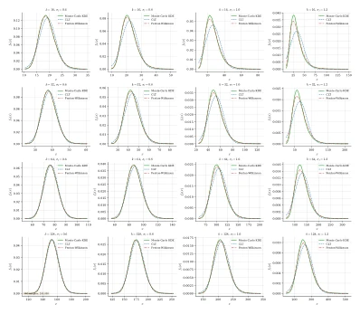
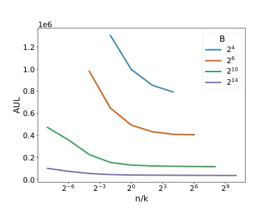
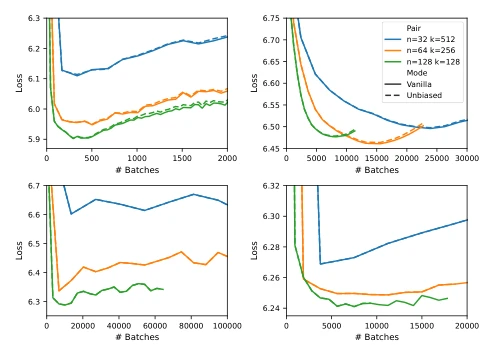
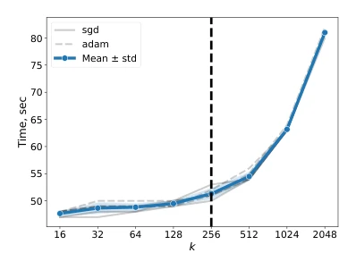

This paper pours cold water on the recommendation system training community: stop fixating on how to sample negative samples; investing all memory into increasing Batch Size is the true way. The authors prove through theoretical derivation and experiments that under a fixed GPU memory budget, sacrificing the number of negative samples (k) to exchange for a larger batch size (n) can significantly accelerate convergence. This is simply a loud slap in the face for engineers obsessed with tuning "sampling strategies". However, the so-called "Unbiased Gradient Correction" (Unbiased) in the paper had absolutely no effect in experiments; the curves overlapped like twins, raising suspicion of "innovation for innovation's sake". Furthermore, experiments focus mainly on classic architectures like SASRec; regarding whether conclusions remain robust for more complex Transformer variants or ultra-large-scale scenarios, the authors only dare to deflect with "future work". Overall, this is a theoretically solid but experimentally somewhat conservative "discouraging" paper, advising you to abandon complex sampling techniques and honestly stack Batch Size.
Large-scale neural recommendation systems typically adopt full-vocabulary Softmax cross-entropy as the objective function, but this leads to final classification layer memory usage reaching O(nK), becoming a training bottleneck. To solve this problem, the industry generally adopts Sampled Softmax or negative sampling techniques, reducing memory complexity to O(nk). However, under the constraint of a fixed memory budget B = n·k, how to allocate resources remains an unsolved mystery: should we prioritize increasing Batch Size (n) to reduce gradient variance, or prioritize increasing the number of negative samples (k) to better approximate the full Softmax distribution? Existing work such as Mezentsev et al. [13] quantified the memory bottleneck of full Softmax, Klenitskiy et al. [11] and Petrov et al. [14] explored the impact of loss functions and negative sampling strategies on quality, Zhelnin et al. [27] also observed the trade-off between n and k, but lacked theoretical guidance. Current training recipes mostly rely on heuristic tuning, failing to deeply analyze the coupling effects of these two types of randomness (sample sampling and category sampling) from the variance perspective of stochastic first-order optimization, leading to resource allocation often being non-optimal.
The paper formalizes Sampled Softmax training as a stochastic optimization problem under fixed memory constraints, with the core lying in minimizing the variance of gradient estimation. The overall Pipeline is divided into three steps: First, construct a multi-class logistic regression model as an abstraction of the last layer, assuming input features x and target y follow a multinomial distribution; Second, introduce unbiased gradient estimation correction. Since directly sampling categories leads to Softmax denominator bias, the authors propose a correction factor α_j based on the sum of logit exponentials, deriving a set of correction formulas through Theorem 3.2 to ensure the unbiasedness of gradient estimation (although experiments show its actual effect is weak); Finally, perform variance decomposition and optimization. Utilizing Fenton-Wilkinson approximation and Delta method, under assumptions such as logit following a normal distribution, decompose gradient variance into a "mini-batch noise" term inversely proportional to Batch Size n and a "category sampling noise" term inversely proportional to the number of negative samples k. Theoretical derivation concludes that under constraint B=n·k, variance minimization requires n to be as large as possible (n~B) and k to be as small as possible (k~1). Considering actual computational efficiency (k needs ≥√B), the authors propose a practical rule n=k=√B, i.e., prioritize maximizing Batch Size.

Figure 6: Approximation of the sum of 𝑘lognormal random variables Lognorm(0, 𝜎𝑙) via CLT and Fenton–Wilkinson. The true distribution is reconstructed using Monte Carlo KDE. Better to view in zoom.
Experiments were conducted on four real-world datasets MovieLens-1M, Gowalla, Netflix, and MovieLens-20M as well as synthetic datasets, with baseline model SASRec, optimizers including SGD and Adam. Evaluation metrics include final NDCG@10 and convergence speed (AUL, i.e., area under the validation loss curve). Results show that under fixed memory budget, configurations (n=128, k=128) or combinations with larger n and smaller k have convergence speeds significantly faster than unbalanced configurations like (n=32, k=512), verifying the theoretical predictions. Ablation experiments found that introducing the unbiased correction term (Unbiased) did not bring performance improvement; loss curves completely overlapped with standard Vanilla, indicating the correction term may be redundant in actual recommendation tasks. Additionally, experiments observed that as k increases, training time grows super-linearly, further corroborating the necessity of reducing k.

Figure 2: Area Under the Validation Loss Curve (AUL) as a function of the 𝑛

Figure 4: Validation loss dynamics across datasets MovieLens- 1M (Top Left), Gowalla (Top Right), Netflix (Bottom Left) and MovieLens-20M (Bottom Right).

Figure 3: Average training time per epoch as a function of the number of negative classes 𝑘for a fixed batch size 𝑛= 256. The vertical black line corresponds to 𝑘= 𝑛. Each curve represents a distinct seed run.